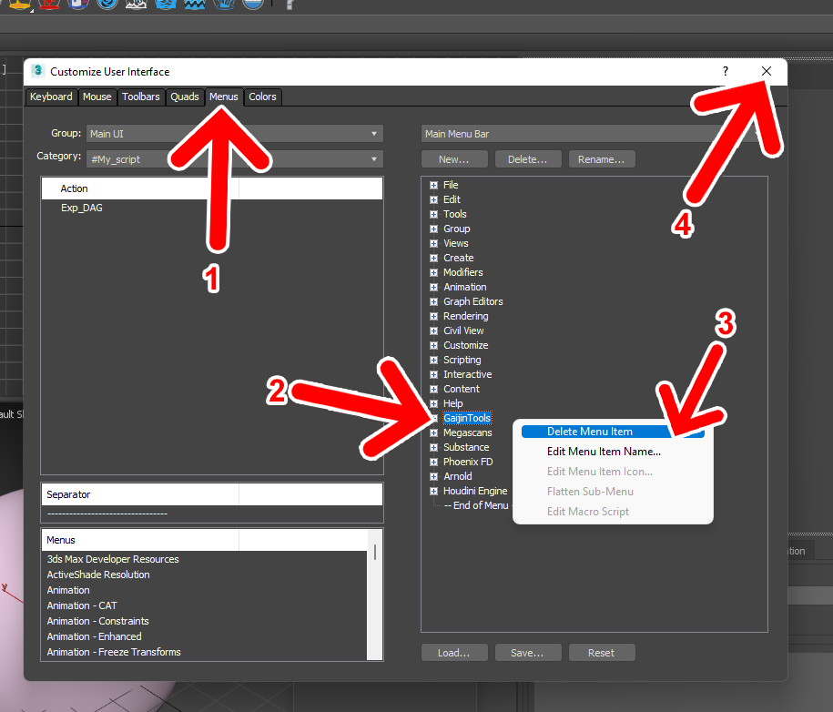
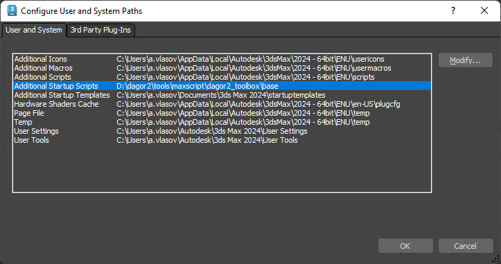
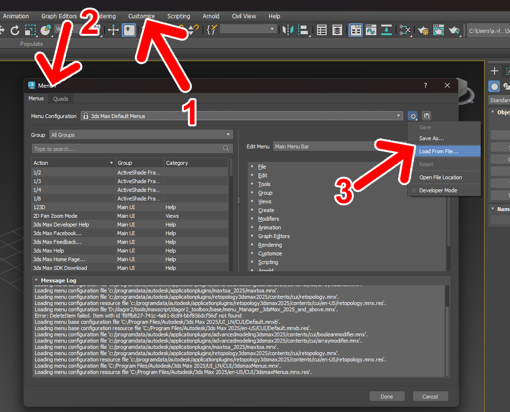

Installation
Important
If you have already installed any of the Dagor Max Tools, you should uninstall the previous version.
If you are installing the tools for the first time, skip the Uninstallation Steps section.
Uninstallation Steps
Go to Customize User Interface.
Choose Menus tab.
Delete GaijinTools from Main Menu Bar.
Now you can close the Customize User Interface window.
Close 3ds Max.
Remove all
GJ_Tools\*.mcrfiles fromusermarcosdirectory. It should be located here by default:C:\Users\USER_NAME\AppData\Local\Autodesk\3dsMax\YOUR_3DS_MAX_VERSION\ENU\usermacros
Remove all startup scripts, that you did not added yourself. Default path:
C:\Users\USER_NAME\AppData\Local\Autodesk\3dsMax\YOUR_3DS_MAX_VERSION\ENU\scripts\startup
{kind=link}
Clean Installation
For a clean installation, follow these steps:
Open Customize > Configure User and Subsystem Paths.
Go to User and System tab.
Select the Additional Startup Scripts line and click the Modify… button.
Specify path to
.../maxscript/baseConfirm the changes by clicking OK.
Restart 3ds Max. The script will automatically add the Gaijin Tools menu right after the Help menu.
{kind=link}
Autodesk 3ds Max 2025 and Later
Warning
If you are using 3ds Max version 2025 or later, you should perform manual installation procedures of the Gaijin Tools menu.
To install the Gaijin Tools menu, follow the steps below:
Open Customize 1 > Menu Editor… ** 2 > Load From File… 3:
Specify the path to the file:
..\base\menu_Manager_3dsMax_2025_and_above.mnx
Once the menu has been successfully loaded, it will appear at the top:

Save current state with the Save button:
Restart 3ds Max.
{kind=link}
{kind=link}